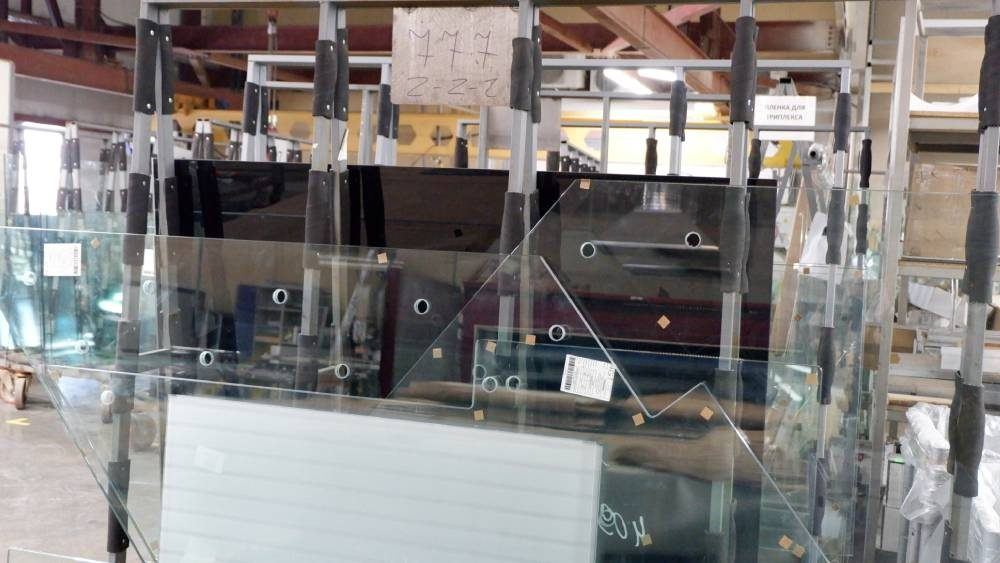
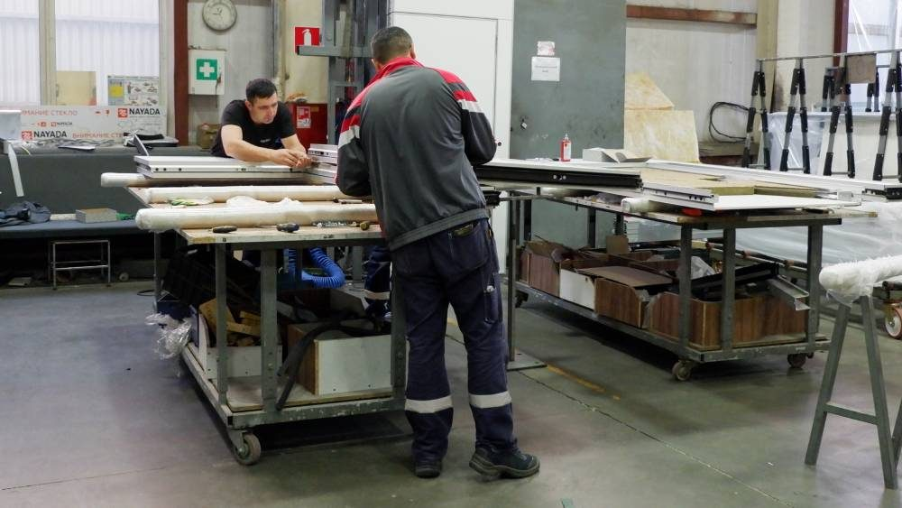
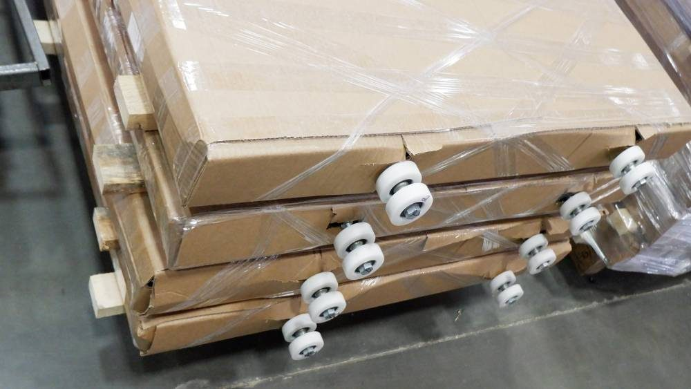
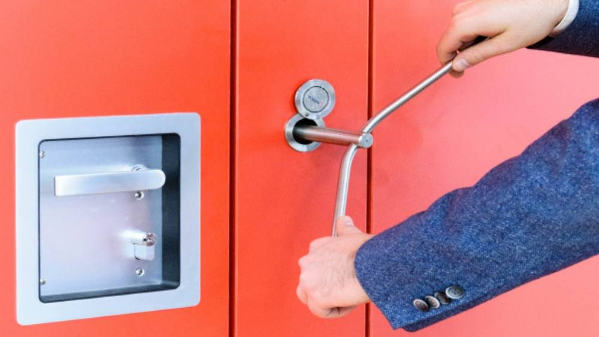
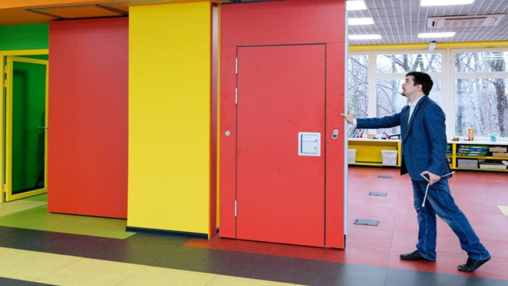
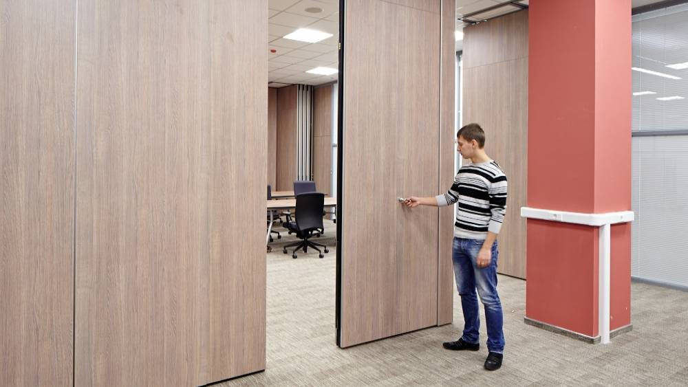

Гарантии
Компания Smart Wall, производитель раздвижных перегородок осуществляет для своих клиентов гарантийное и пост-гарантийное обслуживание.
Гарантийное обслуживание установленных трансформируемых перегородок прописывается в договоре с Заказчиком и осуществляется в полном соответствии с прописанными в договоре пунктами.
Smart Wall осуществляет контроль на всех стадиях производственного процесса изготовления раздвижных перегородок, доставке готового изделия на рабочую площадку к Заказчику и последующего монтажа.
 |
 |
 |


На срок, обозначенный в договоре работоспособность складных перегородок полностью гарантирована.
После окончания гарантийного срока возможно заказать услугу по пост-гарантийному обслуживанию наших раздвижных перегородок. Для этого вы должны заключить со Smart Wall договор на пост-гарантийное обслуживание.
Это сократит ваши затраты на не гарантийный ремонт, в случае, если что-то произошло с раздвижными перегородками по вине заказчика, расценки на устранение проблемы будут существенно ниже, чем в случае отсутствия договора.
Не секрет, что это увеличивает срок эксплуатации перегородок Smart Wall. Систематический осмотр, отладки и обслуживание механизмов и элементов конструкции предупреждают их выход из строя.
 |
 |
 |


Раз в квартал специалист Smart Wall посещает Заказчика и осматривает перегородки с целью выявления дефектов, возникших в процессе эксплуатации.
Проводится профилактика и устранение неполадок. Если случилась внештатная ситуация, требующая наших решений, то специалист Smart Wall приедет к вам в течение суток.
Наши специалисты открыты к общению, и готовы всегда проконсультировать вас по всем вопросам, связанным с эксплуатацией раздвижных перегородок.
Бесплатный замер
Оставьте заявку — замер бесплатно
Перезвоним, уточним задачу и подготовим расчёт. Можно прикрепить планировку или техническое задание.
+7 (499) 755-88-45